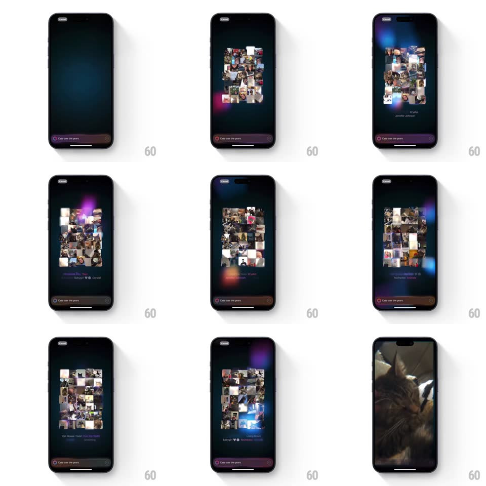

Media
Frame-by-frame

Rebuild this animation 1:1: Apple's Memory Movie creation - a prompt field dissolves into a swirling chromatic cloud of photos that assembles into a living collage with chapter titles.

Rebuild this animation 1:1: Apple's Memory Movie creation - a prompt field dissolves into a swirling chromatic cloud of photos that assembles into a living collage with chapter titles.
## Integration
Integration: stack-agnostic spec - springs given as stiffness/damping, timed motions as duration + curve; map every value to your framework and animation library of choice.
## Scene
Dark screen with a "Create a Memory Movie" composer (keyboard up). On submit, the UI dissolves into a glowing cloud of blurred photo fragments with colored light leaks (pink, blue, purple); the fragments settle into a tiled collage grid while chapter captions fade in and cycle; the sequence ends in a bright bloom.
## Motion spec
Pattern: particle-cloud assembly with chaptered collage.
- Dissolve (0-800ms): the composer UI blurs and falls away; photo thumbnails scatter in as glowing soft-blurred orbs (scale 0.2 to 1 with heavy gaussian blur, 600ms, random stagger 0-400ms), light-leak blobs drifting behind (10s sine paths).
- Assembly (800ms-2.5s): the orbs sharpen and fly to their grid slots (blur 20px to 0, positions spring ~180/20 with per-tile stagger), forming the collage; the grid breathes (scale 1 to 1.02, 4s loop).
- Chapters: captions ("Cat Days", "Living Room"...) fade in below the collage and crossfade every ~2s; on each chapter change, the tiles for that chapter lift (scale 1.06, z-shadow, 300ms) while others dim 30%.
- Finale: the collage converges into a bright white-blue bloom (tiles fly to center, blur + brightness up, 500ms, ease-in) that washes out into the movie's first frame.
## Calibration
- During the cloud phase every tile is heavily blurred - the reveal is the focus pull, not the fly-in.
- Light leaks are large, soft, and slow; they tint the whole scene, never individual tiles.
## Reduced motion
Photos crossfade directly into the collage; chapters fade without tile lift.
## Don't miss
- The collage is an organic photo pile (slight rotations, varied sizes), not a strict grid.
- Chapter text is small and centered; the photos stay the subject.